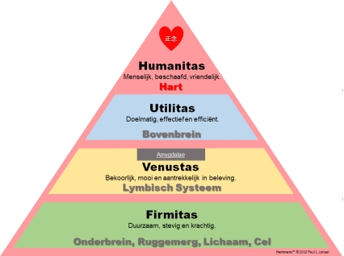
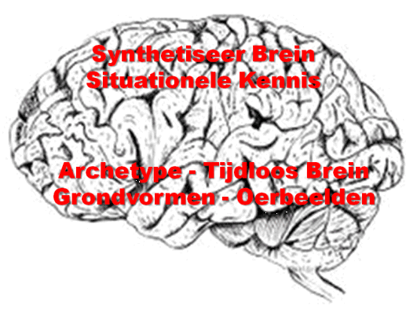

Van oudsher, en dan bedoel ik vanaf zo ongeveer
het jaar nul, wordt Architectuur gekenmerkt door drie kwaliteiten
ofwel deugden zoals deze rond het jaar nul door Vitruvius zijn
benoemd, te weten Firmitas, Venustas en Utilitas. Firmitas staat
voor duurzaamheid, stevigheid en kracht (niveau #1). Venustas staat
voor bekoorlijkheid, schoonheid en subjectieve aantrekkelijkheid
(niveau #2). Utilitas staat voor doelmatigheid, effectiviteit en
efficiëntie (niveau #3).
Hoe Architectuur 'wringt' met de Hartmens wordt
al meteen duidelijk als we bezien hoe in Nederland het woord
'architectuur' zonder blikken of blozen wordt vertaald door
'bouwkunde'. De publicatie van Vitruvius onder de titel "De
Architectura" (letterlijk: over architectuur) kreeg in het
Nederlands de boerse titel 'Handboek Bouwkunde'. De drie
kwaliteiten komen uitstekend overeen met de eerste drie niveaus van
het Hartmens model, en daarmee passen ze samen prima bij … de
Hoofdmens.
Juist in de Architectuur echter horen een
heleboel zaken samen te komen; architectuur is de vormgeving van
onstoffelijke zaken met behulp van stoffelijke
zaken. Architectuur is
geen kunde, het is een kunst. Zelf beweer ik al heel wat jaren dat
Architectuur gaat over de
kunst van het vormgeven van ruimte… En wat bouwkunde ook moge wezen, het is
zeker geen architectuur.
In de laatste decennia is het woord Architectuur
ook in gebruik genomen voor de vertaling van onstoffelijke zaken
naar moderne ‘virtuele’ structuren zoals digitale
informatiestructuren (Informatie Architectuur; de digitale ruimte)
en ook organisatiekenmerken en -eigenschappen (Enterprise
Architectuur). Maar ook deze kunst wordt onder invloed van de
meerderheid aan Hoofdmensen steeds vaker ‘gereduceerd’
tot Bouwkunde, en daarin is van de drie kwaliteiten Utilitas,
Venustas en Firmitas meestal de Venustas al helemaal niet meer aan
de orde.
Architectuur, échte architectuur komt uit
het Hart en kent daarbij vier (!) kwaliteiten oftewel deugden,
waarbij de hoogste deugd Humanitas is en als principe leiding geeft aan de
andere drie 'deugden':

In deze bredere betekenis is Architectuur nauw verwant aan Archetype wat staat voor 'oervorm', iets waarbij je weet en
voelt dat het klopt, wat het is.

Op niveau #1 en #2 heeft ons 'brein' miljoenen
jaren ervaring en een altijd beschikbaar geheugen van Grondvormen,
Oerbeelden en Archetypen die (ook) op elk mens het effect
hebben dat je niet eerst
iets hoeft te leren om het te kunnen
herkennen.